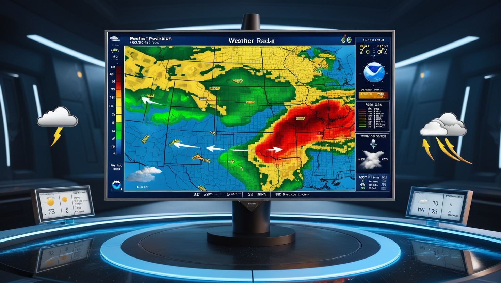

Numerical Weather Prediction (NWP)
NWP uses mathematical models to predict weather based on current atmospheric conditions. By processing data through supercomputers, NWP creates forecasts for temperatures, wind, humidity, and other weather variables. This method is widely used by meteorological agencies worldwide.

Satellite Imagery
Satellites provide high-resolution images and data on cloud patterns, precipitation, and more. By observing real-time atmospheric changes from space, meteorologists can track storm movements, assess cloud formations, and monitor large-scale weather systems.
Radar Observation
Radar is used to detect precipitation, like rain and snow, in real-time. Doppler radar, in particular, is useful for tracking severe weather phenomena such as thunderstorms and tornadoes, helping meteorologists issue timely warnings.
Historical Data Analysis
By analyzing past weather data, forecasters can identify patterns and seasonal trends. Historical data helps improve long-term forecasts and offers insights into weather patterns over time, which is especially useful for predicting seasonal changes.

Artificial Intelligence and Machine Learning
AI and machine learning algorithms analyze large sets of weather data to find patterns and improve prediction accuracy. This modern approach is evolving rapidly and enhancing forecasting capabilities across different regions.

Human Expertise and Interpretation
Despite technological advances, meteorologists play a crucial role in interpreting data and refining predictions. They consider various factors and make adjustments based on their experience and understanding of local weather phenomena.
.jpeg)